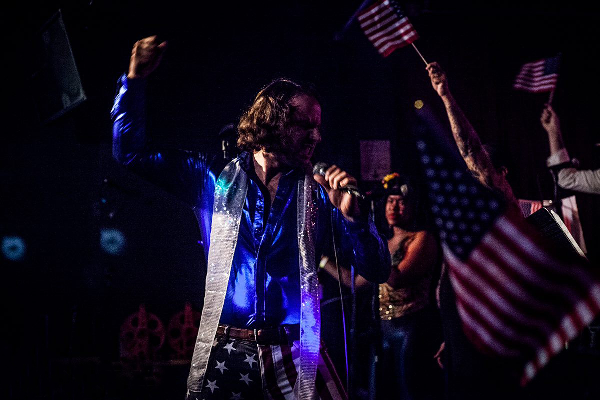

About Tommy Von Voigt
I recently graduated from a Front-End Web Development course at General Assembly where I learned HTML, CSS, JavaScript, jQuery, shred guitar, Xtreme tennis, that one thing Meatloaf refuses to do for love, and how to be an awesome Front-End Web Developer! During my spare time, I enjoy nothing. Nobody has spare time in NYC. Fool.
Relevant Experience
- Artisinal Pickling. Like, soooo much.
- Web Developer, Relaxr 2015 - present. Developed a multi-column layout blog, landing page, and contact forms that render mobile devices inert and safe for consumption.
- Web Developer, Startup Matchmaker 2015 - present. Used a design team's wireframes to develop this company's irresponsible homepage.
- Personally ran Martin Shkrelli's Plenty Of Fish dating profile, 2015.
- Web Developer, CitiPix 2015 – present. Built web app prototype that allows users to store and quickly retrieve other people's photos using keywords, and without needing permission.
- Freelance Photographer: Portfolio
Education
- General Assembly — FEWD 2015
- College of Soft Knocks — B.S. 2009
- School of Hard Knocks — 2005 (Honors)
- Trump University (Pending litigation)